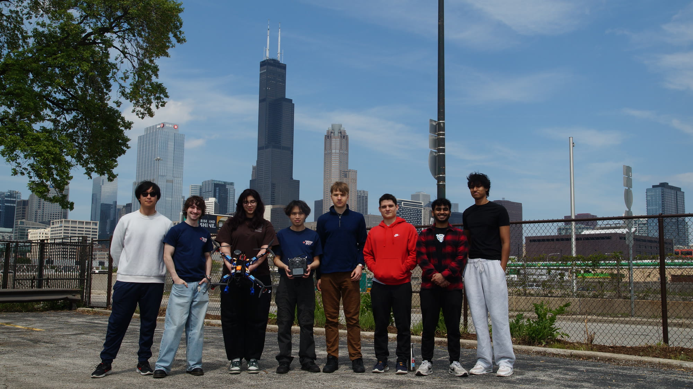
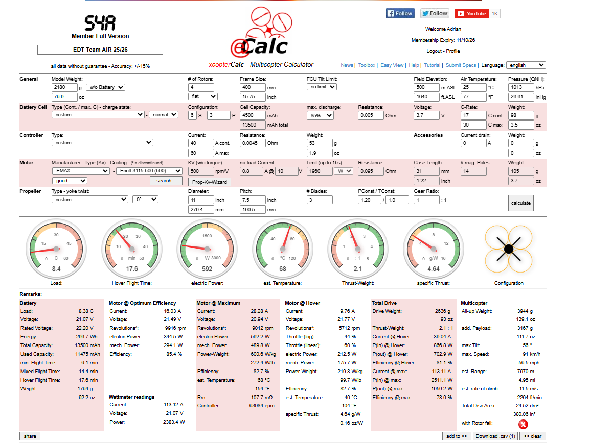
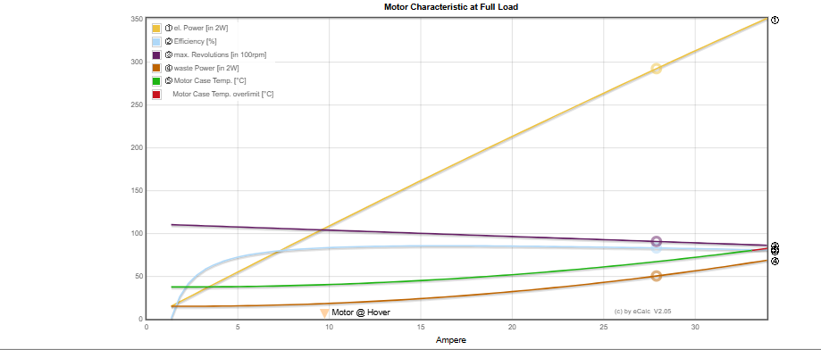
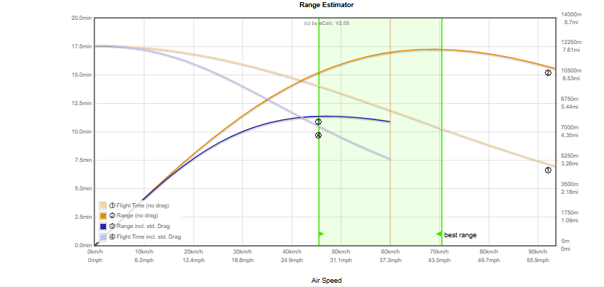

3 × 15 minRequirement / competition slot structure
Each slot permits 5 minutes setup and 10 minutes flight.
A design-review record for a payload-retrieval UAV: mission constraints, preliminary calculator sizing, public-safe integration evidence, and a full CAD assembly.
The competition required three 15-minute slots: 5 minutes for setup and 10 minutes of flight. The package-recovery mission is to fly to a bucket, pick it up, and return it. The bucket is a 1–2 kg requirement and may not be dropped from more than 6 ft.
Each slot permits 5 minutes setup and 10 minutes flight.
Payload must be retrieved and returned, with controlled release geometry.
Autonomous completion earns a bonus for applicable missions.
The team photo and safety-demonstration recording connect the digital assembly to the people, ground-control equipment, and supervised outdoor operation around the physical platform.

Drag to orbit, scroll/pinch to zoom. The source assembly contains 996 nodes and 932 meshes. Filters expose the named CAD evidence by its design-review category; unmatched inherited assembly items remain visible in the full view only.
Function: carry distributed airframe loads and isolate subsystems. Intent: 12 × 12 × 1/8 carbon-fiber plate, rod, and clamp architecture. Interface / risk: clamp preload and plate-hole stress concentration need verification.
Function: transfer thrust into the frame. Intent: top/bottom motor clamps locate each powertrain. Interface / risk: clamp alignment, fastener retention, and ESC thermal routing remain critical.
Function: protect electronics while accommodating recovery hardware. Intent: modular landing-leg elements and quick-release integration. Interface / risk: ground clearance and payload-release clearance must be tested.
Every value in this section is an estimated calculator output with approximately ±15% calculator accuracy. The images and model do not constitute flight testing.
6S3P battery: 299.7 Wh, 13.5 Ah, 1,764 g. Added payload in this snapshot: 3,167 g.
EMAX ECO II 3115-500 with 11 × 7.5 three-blade propeller; 81.1% estimated hover efficiency.
14.4 min mixed, 6.1 min minimum; 4.95 mi estimated range. Hover / maximum current: 39.04 A / 113.11 A.



Reconstructed public-safe comparison results. Scores are decision-study scores, not performance measurements.
| Study | Leading comparison | Score | Criteria / note |
|---|---|---|---|
| Motor | EMAX ECO II 3115 / T-Motor VELOX V3115 | 48 / 44 | Cost, weight, KV, maximum power |
| Propeller | HQProp MacroQuad 11 × 7.5 × 3 / folding alternatives | 58 / 54 | Cost, weight, thrust-to-weight, specific thrust. Snapshot: 2.1 T/W and 4.64 g/W (estimated). |
| 60 A ESC | Hobbywing 60A / Flycolor X-Cross 60A | 67 / 63 | Cost, interfaces, implementation/documentation, weight, size |
| Jetson battery | Samsung 18650 / next LiPo alternative | 88 / 64 | Cost, volume, Wh, capacity, weight, C rating |
| Main battery | Li-Ion #2 high score / “Selected” marker on Li-Ion #1 | 76 / — | Decision requiring reconciliation; no winner is named. |
6 EMAX ECO II 3115 motors; 6 Hobbywing XRotor H60A ESCs; HQProp MacroQuad 11 × 7.5 × 3 props.
12 × 12 × 1/8 carbon-fiber plate; battery mounting, power monitoring, quick-release hardware, wiring and antennas.
Cube Orange flight-control / RFD / Here4 package and Jetson Orin Nano. This is a component integration summary only; no prices, vendor data, links, or purchase records are published.